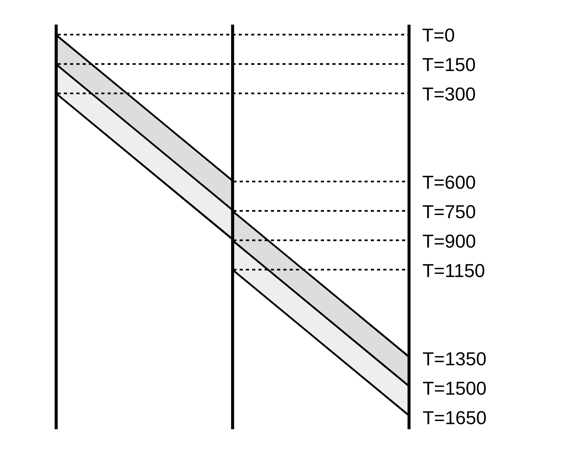

34 Selected Solutions¶
In this chapter we present solutions (in some cases partial solutions) to exercises marked with a ♢.
34.1 Solutions for An Overview of Networks¶
Exercise 4.0
| A | |
|---|---|
| B,C,D | direct |
| E | D (or C) |
| B | |
|---|---|
| A,C | direct |
| D | A |
| E | C |
| C | |
|---|---|
| A,B,E | direct |
| D | E (or A) |
| D | |
|---|---|
| A,E | direct |
| B | A |
| C | E (or A) |
| E | |
|---|---|
| C,D | direct |
| A | C (or D) |
| B | C |
Exercise 9.0(d) (destination D):
The path from S1 to D is thus S1–S2–S5–S6–S12.
Exercise 10.0(a)
The shortest path from A to F is A–S1–1–S2–2–S5–1–S6–F, for a total cost of 1+2+1 = 4.
34.2 Solutions for Ethernet¶
Exercise 3.0
| switch | known destinations |
|---|---|
| S1 | AD |
| S2 | ABD |
| S3 | A |
| S4 | AB |
34.3 Solutions for Advanced Ethernet¶
Exercise 2.0
The path from S2 to S5 is S2–S3–S1–S5.
Exercise 5.0
Exercise 7.0
Table for S1 only:
S1’s table ends up with forwarding entries for h1 and h2, but not h3.
34.4 Solutions for Wireless LANs¶
Exercise 2.0
The three sending nodes can be laid out at the vertices of an equilateral triangle, with the receiving node in the center. Alternatively, with impermeable walls the following arrangement works:
sender1
───────────
receiver sender2
───────────
sender1
The latter arrangement generalizes to almost any number of senders. For the former, senders can be laid out at the vertices of a square, or tetrahedron, or possibly a pentagon, but geometry enforces an eventual limit.
Exercise 3.0(b)
If T is the length of the contention interval, in µsec, then transmission and contention alternate with lengths 151–T–151–T–…. The fraction of bandwidth lost to contention is T/(T+151).
34.5 Solutions for Other LANs¶
Exercise 3.0(b)
One simple strategy is for stations to compare themselves to one another according to the numeric value of their MAC addresses. The station with the smallest MAC address becomes S0, the station with the next-smallest address becomes S1, etc.
Exercise 7.0
The connections are as follows, where the VCI number is shown between the endpoints of each link:
A–1–S1–2–S2–3–S4–2–DB–1–S2–2–S4–1–S3–3–S1–2–A
34.6 Solutions for Links¶
Exercise 4.0
The binary ASCII for the three letters is
| N | 0100 1110 |
| e | 0110 0101 |
| t | 0111 0100 |
If we look up the 4-bit “nybbles” in the right column above in the 4B/5B table at 6.1.4 4B/5B, we get
| data | symbol |
|---|---|
| 0100 | 01010 |
| 1110 | 11100 |
| 0110 | 01110 |
| 0101 | 01011 |
| 0111 | 01111 |
| 0100 | 01010 |
Putting all these symbols together, the encoding is (with spaces added for readability)
34.7 Solutions for Packets¶
Exercise 3.0
| T=0 | A begins sending the packet |
| T=300 | A finishes sending the packet |
| T=600 | S begins receiving the packet |
| T=900 | S finishes receiving the packet and begins sending to B |
| T=1200 | S finishes sending the packet |
| T=1500 | B begins receiving the packet |
| T=1800 | B finishes receiving the packet |
| T=0 | A begins sending packet 1 |
| T=150 | A finishes sending packet 1, starts on packet 2 |
| T=300 | A finishes sending packet 2 |
| T=600 | S begins receiving packet 1 |
| T=750 | S finishes receiving packet 1 and begins sending it to B |
| S begins receiving packet 2 | |
| T=900 | S finishes receiving packet 2 and begins sending it to B |
| T=1350 | B begins receiving packet 1 |
| T=1500 | B has received all of packet 1 and starts receiving packet 2 |
| T=1650 | B finishes receiving packet 2 |
Here’s the data for (b) in ladder-diagram format (not quite to scale):

The long propagation delay means that A finishes all transmissions before S begins receiving anything, and S finishes all transmissions before B begins receiving anything. With a smaller propagation delay, these A/S/B events are likely to overlap.
Exercise 18.0(a)
The received data is 10100010 and the received code bits are 0111. We first calculate the four code bits for the received data:
1: parity over all bits 1: parity over second half: 10100010 0: parity over these bits: 10100010 0: parity over these bits: 10100010
So the incorrect received code bits are 0111.
The first bit of the received code tells us that the error is in the data (rather than the code bits). The second – correct – bit of the received code tells us that the error is in the first half, that is, in the non-bold bits of 10100010.
The third bit of the received code tells us that the error is in the bold bits of 10100010, so we’re down to the third or fourth bit. Finally, the fourth bit of the received code tells us the error is in the bold bits of 10100010, which means the fourth bit is it, and the corrected data is 10110010 (making the data the same as that in the example in 7.4.2.1 Hamming Codes).
34.8 Solutions for Sliding Windows¶
Exercise 4.0
The network is
Here is the table. The column “S1→S2” is the data packet S1 is currently sending to S2; the column “S2→S1” is the ACK that S2 is currently sending to S1; similarly for “S2→D” and “D→S2”.
| T | C sends | S1 queues | S1→S2 | S2→D | ACK D→S2 | S2→S1 |
|---|---|---|---|---|---|---|
| 0 | 1,2,3,4,5,6 | 2,3,4,5,6 | 1 | |||
| 1 | 3,4,5,6 | 2 | 1 | |||
| 2 | 4,5,6 | 3 | 2 | 1 | ||
| 3 | 5,6 | 4 | 3 | 2 | 1 | |
| 4 | 7 | 6,7 | 5 | 4 | 3 | 2 |
| 5 | 8 | 7,8 | 6 | 5 | 4 | 3 |
| 6 | 9 | 8,9 | 7 | 6 | 5 | 4 |
| 7 | 10 | 9,10 | 8 | 7 | 6 | 5 |
| 8 | 11 | 10,11 | 9 | 8 | 7 | 6 |
Exercise 11.0
Exercise 14.0
If Data[8] is in the receiver’s window, then Data[4] must have been received. For the sender to have sent Data[4] it must have previously received ACK[0]. Therefore, all transmissions of Data[0] must precede the first transmission of Data[4], and so must precede the first successful transmission of Data[4]. Because of non-reordering, no Data[0] can arrive after Data[4].
34.9 Solutions for IPv4¶
Exercise 4.0
Forwarding table for A:
| destination | next_hop |
|---|---|
| 200.0.5.0/24 | direct |
| 200.0.6.0/24 | direct |
| default | B |
Exercise 6.0(d)
The subnet prefix is 10.0.168.0/21. The /21 means that the prefix consists of the first two bytes (16 bits) and the first 5 (=21-16) bits of the third byte.
Expressing the third byte, 168, in binary, we get 10101|000.
We now convert the third byte of each of the four addresses to binary, and see which match this to the first five bits. Bits after the “|” mark are ignored.
10.0.166.1: 166 = 10100|110; not a match10.0.170.3: 170 = 10101|010; this is a match10.0.174.5: 174 = 10101|110; this is a match10.0.177.7: 177 = 10110|001; not a match
Exercise 7.0
34.10 Solutions for Routing-Update Algorithms¶
Exercise 3.0
For destination A, R1’s report is likely the same as it sent earlier, when R’s route to A was first established. There is no change.
For destination B, R’s total distance using R1 would be 2+1 = 3. This is tied with R’s route to B using next_hop R2, and so there is no change.
For destination C, R1 is reporting an increase in cost. R’s next_hop to C is R1, and so R must increase its cost to C to 4+1 = 5.
For destination D, R’s total cost using R1 is 3+1 = 4, cheaper than R’s previous cost of 5 using next_hop R3. R changes to the R1 route.
The updated table is
| destination | cost | next hop | |
|---|---|---|---|
| A | 2 | R1 | no change; same next_hop |
| B | 3 | R2 | no change; tie |
| C | 5 | R1 | source increase |
| D | 4 | R1 | lower-cost route found |
34.11 Solutions for Large-Scale IP Routing¶
Exercise 1.0
Exercise 6.0(a)
P’s table
| destination | next hop |
|---|---|
| 52.0.0.0/8 | Q |
| 53.0.0.0/8 | R |
| 51.10.0.0/16 | A |
| 51.23.0.0/16 | B |
Q’s table
| destination | next hop |
|---|---|
| 51.0.0.0/8 | P |
| 53.0.0.0/8 | R |
| 52.14.0.0/16 | C |
| 52.15.0.0/16 | D |
R’s table
| destination | next hop |
|---|---|
| 51.0.0.0/8 | P |
| 52.0.0.0/8 | Q |
34.12 Solutions for Border Gateway Protocol¶
Exercise 1.0(a)
P will receive a route from Q with AS-path ⟨Q,S⟩, and a route from R with AS-path ⟨R,S⟩.
34.13 Solutions for UDP¶
Exercise 2.0(a)
Two seconds after Data[3] was sent and lost, both sender and receiver will time out. The sender will retransmit Data[3]; the receiver will retransmit ACK[2]. The latter will be ignored, as the sender is not retransmitting on duplicates. When the retransmitted Data[3] arrives at the receiver, the receiver will send ACK[3] and the transfer will continue.
34.14 Solutions for TCP Reno and Congestion Management¶
Exercise 13.0(b)
Let t be the transit capacity; then the total cwndmax is t(1+f). At this point it is convenient to normalize the units of capacity measurement so t(1+f) = 2. Then the link-unsaturated and queue-filling phases have lengths in the proportion t−1 to ft. The average height of the tooth during the link-unsaturated phase is (t+1)/2, and the average utilization percentage is thus (t+1)/2t. This gives a utilization of
(t+1)/2t × (t−1) + ft
We next eliminate t. After normalization, we have t(1+f) = 2, and so t = 2/(1+f). Plugging this in above and simplifying gives
utilization = (3 + 6f − f2)/4(1+f)
34.15 Solutions for Dynamics of TCP¶
Exercise 3.0(a)
Because the window size of 50 is larger than the bandwidth×delay product is 40 packets, packets are sent at the bottleneck rate of 5 packets/ms. As packets spend 1 ms on the C–R1 link, on average this link must be carrying 5 packets. The same applies to the R2–D link; for the R1–R2 link with a 2.0 ms propagation delay, the number of packets carried will be 2.0×5 = 10.
Alternatively, from the bandwidth×delay product of 40 packets we conclude 40 packets are in transit. Of these, half are acknowledgments. The other half are distributed in proportion to the link propagation delays, yielding 5, 10, and 5 packets.
Exercise 4.0
At the point when A’s bandwidth is 2 packets/ms, B’s bandwidth is 4 packets/ms, and so B has 4×20 = 80 packets in transit. As B’s winsize is 120, this leaves 120−80 = 40 packets in R’s queue.
For A to have half as much bandwidth, it must have half the queue capacity, or 20 packets. With a bandwidth of 2 packets/ms and an RTTnoLoad of 40 ms, A will have 2×40 = 80 packets in transit. A’s winsize is then 20+80 = 100.
We can confirm this using the following formulas from 20.2.3 Example 3: competition and queue utilization:
However, these formulas were derived under the assumption that the bottleneck bandwidth was normalized to 1. To apply them here, we need to measure time in units of 1/6 ms; that is, all times need to be multiplied by 6. We have:
Substituting these into the second formula, we get the total queue utilization Q = 180 − 120 = 60, in agreement with our earlier answer. From the first formula we now solve for wA = 𝛼(Q + 2(dA+d)) = (1/3)×(60 + 240) = 100, also in agreement with our earlier answer.
Exercise 5.0(a)
The bottleneck bandwidth is 5 packets/ms, and as the bottleneck link is saturated, this will be the transmission rate on all links. For 5 packets to be in transmission, we need a propagation delay of 5 packets / (5 packets/ms) = 1.0 ms.
Exercise 6.0
(a). If the A–B connection has a bandwidth of 3 packets/sec and a RTTnoLoad of 16 ms, then a window size of 3×16 = 48 is necessary. Similarly, the window size for the C–D connection is 3×10 = 30 packets.
It remains to show that these window sizes actually result in an equal division of bandwidth. The A–B bandwidth cannot exceed 50% in the steady state, because of the limitation imposed by the R2–R3 link. If the C–D bandwidth exceeds 50%, then the bandwidth-delay product exceeds 30 = wC, and so the C–D connection can have no packets in the queue at R1, leaving the A–B connection with no queuing delays. This means A sends wA packets in 16 ms, for a bandwidth of 3 pkts/ms.
34.16 Solutions for Dynamics of TCP¶
Exercise 2.0(a)
The cwnd will vary between 500 and 1000, with an average of 750 packets. Losses occur at intervals of 500 RTTs, during which 500*750 packets have been sent.
34.17 Solutions for Queuing and Scheduling¶
Exercise 6.0(a)
Because all three subqueues are always active, the bit-by-bit virtual clock always moves in lockstep with the real clock, and we can calculate finishing times according to the real clock. Here are transmissions, in order, with finishing times taken to be cumulative bytes.
| Queue | size | finishing time |
|---|---|---|
| 1 | 190 | 190 |
| 1 | 190 | 380 |
| 1 | 190 | 570 |
| 1 | 190 | 760 |
| 1 | 190 | 950 |
| 2 | 1000 | 1000 |
| 1 | 190 | 1140 |
| 3 | 1200 | 1200 |
| 1 | 190 | 1330 |
| 1 | 190 | 1520 |
| 1 | 190 | 1710 |
| 1 | 190 | 1900 |
| 2 | 1000 | 2000 |
| 1 | 190 | 2090 |
| 1 | 190 | 2280 |
| 3 | 1200 | 2400 |
| 1 | 190 | 2470 |
Exercise 6.0(b)
Initially each subqueue has a deficit of 0.
| Queue | packets sent | deficit |
|---|---|---|
| 1 | 5, =950 bytes | 50 |
| 2 | 1 | 0 |
| 3 | pass | 1000 |
| 1 | 5, =950 bytes | 100 |
| 2 | 1 | 0 |
| 3 | 1 | 800 |
| 1 | 5, =950 bytes | 150 |
| 2 | 1 | 0 |
| 3 | 1 | 600 |
| 1 | 6, =1140 bytes | 10 |
| 2 | 1 | 0 |
| 3 | 1 | 400 |
34.18 Solutions for Mininet¶
Exercise 6.0(a)
When h1 sends its broadcast ARP, the controller learns where h1 is relative to s1, s2 and s3.
When h2 replies to h2, there is not yet a rule for h1 at s2, and so s2 sends the packet to the controller, which installs rules for destinations h1 and h2 in s2. The packet is then flooded. When it arrives at s1, the controller installs rules for h1 and h2 and s1. The packet also arrives at s3, by flooding, so the controller installs rules for h1 and h2 in s3.
When h3 sends its broadcast packet, all of s1-s3 see the packet. Because the packet is broadcast, all three switches report the packet to the controller.
When h1 replies to h3, no switches have a rule for destination h3, and the controller knows how to reach h1 and h3 from each switch, so a new rule for reaching h3 is installed at each switch.